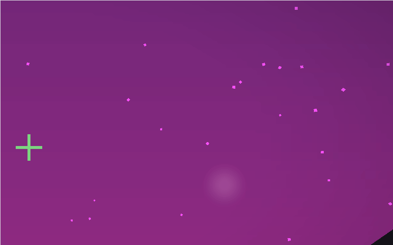

What in the World? (Team 60)
Advika Bhike, Catherine Chu, Eshani Jha, Malavikha Sudarshan
GitHub: https://github.com/cal-cs184-student/matcha
Website: https://cal-cs184-student.github.io/matcha/final.html
Final Slides: https://docs.google.com/presentation/d/1ZaHTSO4sCubKaPMQhuTvd9Z5Uo-jNtgcxodGCnF9MSc/edit?usp=sharing
Final Video: https://youtu.be/S4y190PJRdA
Abstract
In this project, we designed new textures to render in Minecraft using Blockbench. We created two different themes of textures and features: Japan theme and Candy theme. The Japan theme includes textures such as cherry blossom leaves, spiral leaves and koi fish, and features such as a pastel green day sky and swaying trees. The Candy theme includes candy-themed trees and patterned sand, as well as features such as twinkling stars and flashing comets in the night sky, a reflective pink seawater, and a pastel pink day sky with clouds. We also blended features from both themes such as candy textures, swaying trees, and reflective water to create a Blended Fantasy theme. Finally, we simulated two types of watercolor-effect filters on the rendered scene, implementing Gaussian blurring and bilateral blurring for a color-bleeding effect.
Technical Approach
Overview of Features
Japan Theme
- Japan-themed textures: trees, path, koi fish
- Pastel green day sky with clouds
- Swaying trees (a reach goal!)
Candy Theme
- Candy-themed textures: trees, path, sand
- Pastel pink day sky with clouds
- Pink seawater with reflection
- Twinkling stars and flashing comets (a reach goal!)
Blended Theme
- Mixed candy tree texture
- Pink seawater with reflection
- Swaying trees
Additional Effects
- Watercolor filter implemented using Gaussian blur and bilateral blur
Frameworks and Pipeline
Minecraft’s mod friendly architecture separates appearance into two orthogonal layers: resource packs and shader packs. A resource pack is a ZIP whose internal path always begins with assets/.
Below it sit PNG textures, block state JSON files, sound files, and more. Dropping a new image at assets/minecraft/textures/block/grass_block_top.png will override the grassy surface in
game without touching any code. A shader pack, by contrast, lives in the root level directory shaderpacks/. It contains raw GLSL files (.vsh for vertex, .fsh for fragment) under a shaders/
folder, plus a shaders.properties files that tells OptiFine which stages (gbuffers_terrain, gbuffers_entities, composite, etc.) should use which programs.
OptiFine provides the bridge between Mojang’s fixed rendering pipeline and our custom code. At runtime it injects helpful uniforms (worldTime, sunPosition, gbufferProjectionInverse, shadowtex0, etc.)
into every stage, allowing us to reconstruct world space positions, sample depth buffers, or query the current biome without external libraries. Each stage writes its results to a numbered colortexN. Later
stages can then read those buffers, enabling advanced. For example, gbuffers_terrain.fsh might output raw albedo and normals to colortex0 and colortex1, while composite.fsh normalizes the results,
performs Gaussian blur, and writes the tone mapped result to the screen. Iterative debugging was done through the F3 + T reload key bind. To write our shader code, we started with open-source
code mimicking Minecraft’s inbuilt renders and modified the necessary .fsh and .vsh files.
Blockbench sits one layer above this ecosystem, acting as the content authoring IDE. Here we can model and paint entities in a live PBR preview that emulates Minecraft’s lighting. Blockbench can also export project meshes as a JSONs and textures as a PNGs to be dropped into the appropriate shader pack or resource pack. During our project we used this workflow to sculpt custom textures (e.g. cherry blossom log, peppermint sand, and Lorax inspired fish).
Textures
We designed and drew out textures for blocks and modified entities in Blockbench, for both the Candy and Japan-themed world. We set Blockbench’s Preview Scene feature to render and see assets in a simulated game environment before testing it in Minecraft. For our Candy-themed world, we made lollipop swirls, chocolate blocks and other bright, colourful, blocky textures with thick outlines. We also modified an existing entity of the tadpole in Minecraft to create a Lorax-like fish for our candy-themed world. For the Japan-themed world, we made much more subtle, abstract blocks of cobblestone, cherry blossoms, pink water and tree trunks.
Here are some of the textures we designed:

|

|

|

|
Pink seawater with reflection
We implemented the pink seawater with reflections by simulating pseudo-normal vectors of the water using cosine and sine functions and using that to calculate the Fresnel term. The Fresnel term approximates reflectivity based on view angle, with Shlick approximation:
float fresnel(vec3 N, vec3 V) {
float c = clamp(dot(N, V), 0.0, 1.0);
return 0.06 + (1.0 - 0.06) * pow(1.0 - c, 5.0);
}We lightly ray traced in 2D (30 steps):
vec3 traceSSR(vec2 uv, vec2 dir) {
for (int i = 0; i < 30; ++i) {
uv += dir * 0.003;
if (texture2D(depthtex0, uv).r < 1.0)
return texture2D(colortex0, uv).rgb;
}
return vec3(0.0);
}Water and specular lighting were blended based on the Fresnel term:
vec3 blinnSpec(vec3 N, vec3 L, vec3 V) {
vec3 H = normalize(L + V);
float s = pow(max(dot(N, H), 0.0), 96.0);
return vec3(s);
}Main logic:
vec3 N = waterNormal(gl_FragCoord.xy / viewRes * 4.0, float(worldTime));
vec3 V = normalize(viewDir);
vec2 Ruv = reflect(V, N).xy;
float F = fresnel(N, V);
vec3 refl = traceSSR(gl_FragCoord.xy / viewRes, Ruv);
vec3 spec = blinnSpec(N, sunDir, V);
vec3 pink = vec3(1.0, 0.55, 0.75);
vec3 noise = vec3(hash(gl_FragCoord.xy * 21.7) * 0.02);
vec3 colour = mix(pink, refl, F) + spec + noise;
gl_FragColor = vec4(normalize(colour), 1.0);Vertex shader input:
// gbuffers_water.vsh
varying vec3 viewDir;
void main() {
vec4 pos = gl_ModelViewMatrix * gl_Vertex;
viewDir = -pos.xyz;
gl_Position = ftransform();
}Swaying Trees
To code swaying trees, we remembered that vertex shaders transform vertex positions from Homework 4 Part 5: Shaders.
Finding the corresponding file in charge of terrain gbuffers_terrain.vsh, we changed up the code to add displacements to relevant vertices and create a swaying motion for tree leaves. We calculated the motion using a sine function that varies over time (frameTimeCounter), vertex position (gl_Vertex.x and gl_Vertex.z, not in vertical y direction to realistically mimic gravity) and a scaling factor (windStrength).
Then, we make sure only tree leaves are affected, computing a heuristic isLeaf that is closer to 1 for leaf-like green colors and 0 otherwise. The displacement vector becomes motion weighted by isLeaf and different scaling factors per coordinate (less in y direction), and is finally added to the vertex position before its transformation into camera space.
Watercolor filter effect

The blurring effect is created from an application of convolution (as learned in Lecture 3), where we use
a 5x5 size kernel to estimate the value of one pixel. For both effects, only the composite.fsh
file was edited, and the shaders.properties file was updated to use the new composite file
instead of the default one.
For Gaussian blurring, the weights in the convolution kernel are determined solely by the
spatial weight, e^((-x² - y²) / 2.0), where (x, y) represents the pixel associated with that
weight. For each pixel (a, b), we compute a weighted average of all the neighboring pixels’ textures within
a 2-pixel radius surrounding (a, b). Additionally, we raise the result to the 0.9th power to make
the image softer. This final result is the final texture for that pixel.
Bilateral blurring, on the other hand, uses weights that correspond to both spatial weight,
e^((-x² - y²) / (2.0 * s₁²)), and color weight, e^((-c²) / (2.0 * s₂²)), where
c represents the difference between the sample color (x, y) and center color (a, b), and
s₁ and s₂ represent constant factors controlling how much we want to weight spatial
and color difference respectively. We also compute a weighted average of these samples and adjust the tone by
raising the result to the 0.9th power before setting it as the pixel’s final texture value.
Gradient sky that changes color from day to night
To create a pastel themed sky that has a blend of two colors and changes according to whether it is night or day, we used a cosine function to map Minecraft’s internal clock represented by worldTime to a specific time of the day. We defined what we wanted the top of the sky (the zenith) and the horizon to look like (either cotton-candy pink and soft lavender in the morning and pastel purplish pink and deep lavender in the night, for the horizon and zenith respectively). Then, we interpolated across these values using the output of the cosine function as our parameter. This final interpolated color is outputted as the color of our sky. Definitely a really pretty implementation of the concept of linear interpolation that we learned about in class!
Fog and Clouds
This feature lives in two shaders:
gbuffers_sky.fsh– draws the horizon-to-zenith sky gradient and first-pass clouds.composite.fsh– applies fog based on depth after rendering opaque geometry.
First-Pass Clouds (gbuffers_sky.fsh)
To simulate fluffy clouds, we reused the 2D value noise from our starfield shader but sampled at a lower frequency to create slow, large-scale puffs. We multiplied two octaves of noise for more natural variation and softened the edges using smoothstep.
vec2 uv = (frag.xy + vec2(worldTime * 0.00003, 0.0)) * 0.0015;
float density = noise(uv) * noise(uv * 2.0); // fractal detail
float mask = smoothstep(0.45, 0.65, density); // soft edge
We then blended in a cloud color based on time of day. The clouds are teal during the day and a muted blue-grey at night:
vec3 cloudDay = vec3(0.80, 1.00, 0.95);
vec3 cloudNight = vec3(0.15, 0.25, 0.35);
vec3 cloudCol = mix(cloudNight, cloudDay, dayFrac);
skyCol = mix(skyCol, cloudCol, mask * 0.6); // 60% opacity cap
This 60% cap makes sure clouds remain translucent enough to show stars during dusk or dawn.
Exponential Fog (composite.fsh)
We added distance-based fog in the composite pass using view-space depth from the G-buffer. The fog strength was computed using an exponential function:
float fogFactor = 1.0 - exp(-z * fogDensity); // e^(-λz)
fogFactor = clamp(fogFactor, 0.0, 1.0);
Fog is denser at night and lighter during the day, controlled by dayFrac:
float fogDensity = mix(0.002, 0.0005, dayFrac); // thick at night
To keep the fog color consistent with the sky, we sampled the same horizon-to-zenith gradient used for the sky shader, using screen-space height:
float v = frag.y / viewHeight;
vec3 fogCol = mix(horizonCol, zenithCol, v); // pulled from sky pass
Since both the sky and fog use dayFrac, the fog transitions naturally—reddish at sunset, teal at midnight.
Final Fog Blend
The fog was blended with the scene color, and cloud shadows were optionally darkened to make distant terrain fade under clouds:
vec3 scene = texture2D(colortex0, screenUV).rgb;
vec3 fogged = mix(scene, fogCol, fogFactor);
float cloudShadow = texture2D(skySampler, screenUV).a;
fogged = mix(fogged, fogged * 0.9, cloudShadow * 0.4);
gl_FragColor = vec4(fogged, 1.0);
Twinkling Stars and Flashing Comets
Stars were grid-based and hashed to remain stable across frames:
float h = hash(floor(starUV));
if (h > 0.982) { /* small star */ }
if (h > 0.9975) { /* big flare */ }We did this for the twinkling effect:
float tw = 0.5 + 0.5 * sin(worldTime*0.025 + h*80.0);
float halo = smoothstep(0.32, 0.0, length(fract(starUV) - 0.5));
skyCol = mix(skyCol, starC, halo * tw * starPhase);Large stars added cross flares:
float flare = (smoothstep(0.35, 0.0, abs(f.x)) +
smoothstep(0.35, 0.0, abs(f.y))) * 0.5;
skyCol = mix(skyCol, bigC, (halo+flare) * twBig * starPhase);And we added this line for stars to fade in and out smoothly:
float starPhase = max(0.0, (0.6 - dayFrac) / 0.6);Problems Encountered & Solutions
Terrain Disappearing
One error that we ran into was the terrain going missing while we were editing the vertex shaders. We tackled this by debugging exactly how we were editing the vertex positions, making sure that we were computing in the right spaces and scaling properly. For example, we realized that the line gl_Position = ftransform(); was actually short for projecting a vertex from object/model space into camera space, then changed our approach accordingly to displace our vertices before this projection step.

Excess Blur Effect
While creating the watercolor effect, we initially only implemented Gaussian blurring and found the blur to be overpowering to the point where the whole screen was green and the whole screen was blue (depending on whether we were looking at a tree or the sky). To resolve this, we played around with different kernel sizes. We started out with a 10x10 kernel, which was really blurry, and then switched to a 3x3 kernel at some point, which ended up being too small to render a blur. We then reverted to the 5x5 kernel, which ended up being more distinct. This issue was also the motivation behind exploring different types of blurring effects, such as bilateral blurring, since we could preserve color between edges better. The hyperparameters we chose for bilateral blurring are shown in the code above.
Knowing Which Files To Edit
When tinting the sky, we originally just tried to change the main function in gbuffers_sky.fsh to return the color pink, using the logic that the function would just return a vector that mapped to the color pink. But it wasn’t rendering quickly, and through referencing code from Minecraft Shader Wiki, we realized none of those files actually changed gbuffers_sky.fsh and they actually overwrote the sky variable in the composite.fsh file.
Lessons Learned
One of the first lessons that we learned was how to familiarize ourselves with the relevant software, shader documentation and GLSL language for our project. To set up rendering in Minecraft, we spent a decent amount of time researching which software tools to install (e.g. Minecraft, Optifine, Forge), and ultimately chose Minecraft with Optifine because of its built-in support for coding new GLSL shaders. It took us a couple of tries to install and set up compatible versions of Minecraft and Optifine, but this whole process taught us how to look up available resources and piece together the ones that best suited our goals. We also looked into the different Minecraft shader files and learned the order in which they render in a game – by taking the time to study the existing codebase and rendering engine, we got a good idea of exactly which shaders to edit for each of our ideas. While implementing our ideas, we learned to apply the concepts that we learned in class about texture mapping, lighting (Blinn Phong shading, one-bounce global illumination, reflection across materials) and shaders (cloth simulation vertex and fragment). We were excited to build upon these, such as trying to implement reflection off of a water surface while following Minecraft’s specific documentation, or simulating swaying trees by first editing the vertex shader for tree leaves to then displace and pass on per-vertex positions to the corresponding fragment shader.
Results
Starting Point Shader Codebase
Japan Theme Features
Candy Theme Features
Watercolor Shader Effect
Blended Theme (Fantasy)
Twinkling Stars & Flashing Comets

|

|
|
Pink Sea Reflection

|

|
Swaying Trees

|

|

|
Watercolor Effects
|
|
|
One of our main goals with the Candy-Sky rendering effects was to keep everything running smoothly in real time—even with added features like colorful clouds, soft fog, and dynamic skies. From the start, we set a hard cap: each shader pass couldn't take more than about 0.2 ms on a 1080p screen, so we could consistently hit 60 FPS (i.e., one frame every 16 ms).
To stick to this limit, we used a few clever tricks:
- No texture lookups for noise or height—just math. All clouds and stars use lightweight value-noise or trig functions.
- No expensive loops—we capped things like SSR (screen-space reflection) at 30 steps max and avoided loops entirely for stars and clouds.
- Reused variables—we calculate values like
dayFrac(day/night blend factor) once and share it across shaders for fog, horizon color, and clouds.
Real-World Performance
We tested our shaders on two systems:
- NVIDIA GeForce GTX 1660 (6 GB) – mid-range GPU, tested in Minecraft 1.20.4 with OptiFine G10
- AMD Ryzen 7 7840U (780M integrated graphics) – no discrete GPU
Both systems kept frame rates well above 60 FPS, even in high-stress scenes (lots of foliage, water reflections, or combat particles).
Frame rate steady at 62 FPS on integrated graphics
Frame rate peaks at 97 FPS on mid-range GPU
References
- shaderLABS Base-330 GitHub Repository
- Solid Texture Synthesis from 2D Exemplars
- Minecraft Shaders Tutorial
- Minecraft Shaders with Realistic Lighting Tutorial
- BSL Shaders on 9Minecraft
- GLSL Tutorial (OGLDEV YouTube)
- ShaderLabs: OptiFine Rendering Pipeline (Composite)
- Best Minecraft Shaders – Rock Paper Shotgun
- Minecraft Fandom: Shaders
- ShaderLabs: OptiFine Shader Pipeline (Extended)
- Minecraft 1.21.4 Shaders – 9Minecraft
Contributions
Advika Bhike:- Created textures for Japan theme (trees, paths, koi fish) in Blockbench
- Coded watercolor effect in
composite.fshandshader.properties - Contributed to writeup, video, and slides
- Created prototype of Japan-themed world with cherry blossom trees in Blockbench
- Coded animation of trees swaying in
gbuffers_terrain.vsh - Contributed to writeup, video, and slides
- Created textures for Candy theme (trees, paths, sand) in Blockbench
- Coded reflective pink sea in
gbuffers_water.vsh,gbuffers_water.fsh,final.fsh,final.vsh - Coded stars and comets in
gbuffers_skybasic.vsh,gbuffers_skybasic.fsh,composite.fsh,composite.vsh - Contributed to writeup, video, and slides
- Created textures for Japan theme (trees, paths) in Blockbench
- Compiled writeup, images, and videos into webpage
- Contributed to writeup, video, and slides